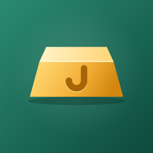

Jasan
Varlık ve borç takibi · Net worth tracker
Jasan nedir?
Ne kadar altının, dövizin, kriptonun, hissenin, fonunun ve BES'inin olduğunu ve hepsinin nerede ya da kimde durduğunu kaydedersin; borçlarını da eklersin. Jasan net varlığını güncel kurlarla hesaplar.
- Altın (gram, çeyrek, yarım, tam, Cumhuriyet, bilezik), gümüş, platin, paladyum
- TL, dolar, euro, sterlin; kripto paralar; Borsa İstanbul hisseleri; fonlar; BES
- Kredi kartı, kredi ve elden borçlar; ödenen borçlar silinmeden arşivlenir
- Dağılım grafiği, 23 dil, dışa ve içe aktarma ile yedekleme
- Hesap yok, reklam yok, takip yok: kayıtların yalnızca telefonunda
Sık sorulanlar
Verilerim nerede?
Yalnızca telefonunda, uygulamanın kendi veritabanında. Ayrıntılar gizlilik politikasında.
Yeni telefona nasıl taşırım?
Eski telefonda Ayarlar › Dışa aktar ile yedek dosyasını kaydet (ör. iCloud ya da Drive), yeni telefonda Ayarlar › İçe aktar ile o dosyayı seç.
Fon fiyatları neden otomatik gelmiyor?
TEFAS otomatik erişime izin vermiyor. Fonun birim fiyatını kendin girer, fonun sayfasından güncellersin.
Fiyatlar ne kadar güncel?
Altın, maden ve döviz Kapalıçarşı ve banka alış fiyatlarıyla; kripto CoinGecko'dan; hisseler Borsa İstanbul'dan 15 dakika gecikmeli gelir. Fiyatlar bilgi amaçlıdır, yatırım tavsiyesi değildir.
Destek
Soru, hata bildirimi ve öneriler için: jasan.destek@gmail.com
What is Jasan?
Record how much gold, currency, crypto, stocks, funds and pension savings you have and where or with whom each one is; add your debts too. Jasan calculates your net worth at current prices.
- Gold (gram, Turkish gold coins, bracelets), silver, platinum, palladium
- Turkish lira, US dollar, euro, British pound; cryptocurrencies; Borsa Istanbul stocks; funds; pension (BES)
- Credit cards, loans and personal debts; paid debts are archived instead of deleted
- Breakdown chart, 23 languages, backup with export and import
- No accounts, no ads, no tracking: your entries stay on your phone
FAQ
Where is my data?
Only on your phone, in the app's own database. See the privacy policy for details.
How do I move to a new phone?
On the old phone, save a backup with Settings › Export (e.g. to iCloud or Drive); on the new phone, choose that file with Settings › Import.
Why aren't fund prices automatic?
TEFAS doesn't allow automated access. You enter a fund's unit price yourself and update it from the fund's page.
How current are the prices?
Gold, metals and currencies use Grand Bazaar and bank bid prices; crypto comes from CoinGecko; stocks from Borsa Istanbul with a 15-minute delay. Prices are for information only and are not investment advice.
Support
Questions, bug reports and suggestions: jasan.destek@gmail.com